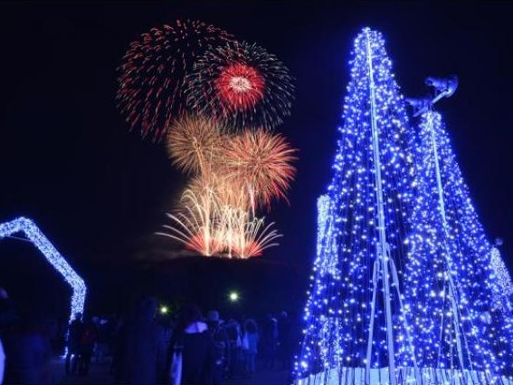
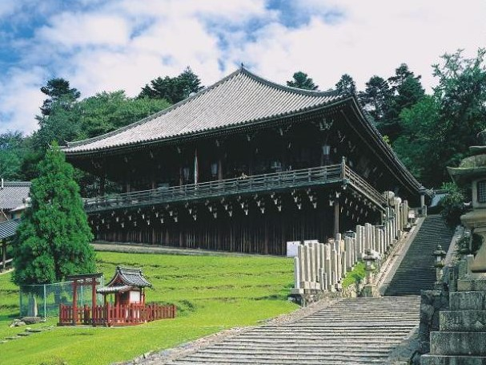
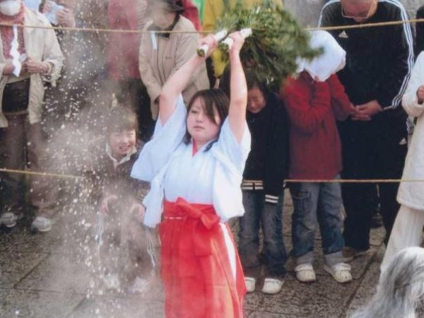
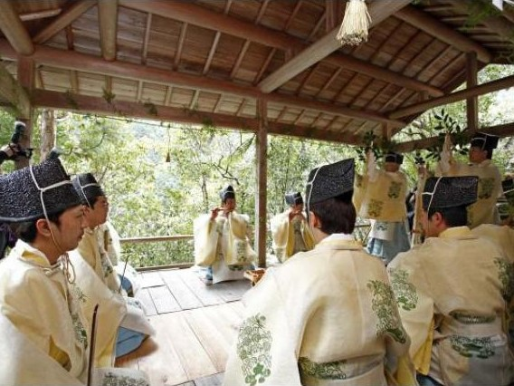
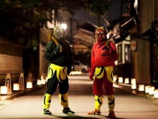

|  |
しあわせ回廊 なら瑠璃絵 奈良・斑鳩・天理
奈良を代表する三社寺を幻想的な“光の回廊”でつなぎ、美しい瑠璃絵の世界を演出する「なら瑠璃絵」が開催されます。春日大社、興福寺、東大寺で夜間特別拝観が、奈良国立博物館で夜間特別開館が、実施されます。手を合わせることで心が洗われ、その小さな祈りがやがて大きな平和への祈りとなって世界に届くように、瑠璃色の星がいつまでも美しく輝くようにとの願いを込めて行われます。提灯を点しながら、ナビゲーターとともに会場を散策する「夜参り提灯」、瑠璃絵マーケットなども催されます。最終日には、奈良公園の誕生日を祝う奈良公園バースデイ花火が打ち上げられます。 |
|  |
東大寺二月堂修二会（お水取り） 奈良・斑鳩・天理
東大寺二月堂修二会は、奈良時代から1260年以上もの間続けられている荘厳な法会です。参籠する僧侶である練行衆が、二月堂の本尊である十一面観音の宝前で、世の中の人々に代わって日常に犯している過ちを懺悔（さんげ）し、人々の幸せを祈ります。代表的な行の一部の名をとって、「お水取り」とも呼ばれます。 |
|  |
三輪の初えびす 飛鳥・橿原・三輪
日本最初の市、海石榴市（つばいち）の伝統を今に伝える祭典が、三輪坐惠比須神社で執り行われます。5日の宵えびすでは、子どもたち約200人が、生鯛と彫刻の大鯛を引いて町内を練り歩く「鯛引き行列」（雨天中止）が、本えびすの6日は「初市大祭」が、7日は「御湯の神事」「景気太鼓」「ごくまき」などが行われます。 |
|  |
4
浄見原神社国栖奏 吉野・奥吉野
天武天皇を祀る浄見原神社の境内で、毎年、旧正月の14日にあたる日に神事が執り行われます。舞翁2人、笛翁4人、鼓翁1人、歌翁5人が、神官に導かれて舞殿に登場し、右手に鈴、左手にサカキを持った舞翁が、歌翁の朗々とした声にあわせて、古式ゆかしい舞いを披露します。この神事は、応神天皇が吉野へ行幸した際、國栖人（くずびと）が一夜酒を献上し、歌舞を奏したことが始まりとされます。 |
|  |
5
鬼フェス in 吉野山 吉野・奥吉野
吉野山が鬼に染まる「鬼フェス in 吉野山」が開催されます。上町エリア、下町エリア、中町エリアの各エリアで、夜に「鬼火ライブ」が催されるほか、鬼のフェイスペインティングやフォトコンテスト、バルチケットで吉野山のグルメや土産物の買い物が楽しめる「鬼バル」、吉野山朱印巡り（参加寺社に限る）などが行われます。2月3日には、「福は内、鬼も内」と唱える、全国でも珍しい節分行事「金峯山寺節分会 鬼火の祭典」もあります。県内寺社の鬼が吉野に集う「鬼の夜会in吉野山」も必見です。 |
日本は、北の亜寒帯から南の熱帯までを含む南北にとても長い国です。ここでは四季の変化に富んだ魅力的な日本の観光地を地域別に紹介します。
 ページトップへ戻る
ページトップへ戻る